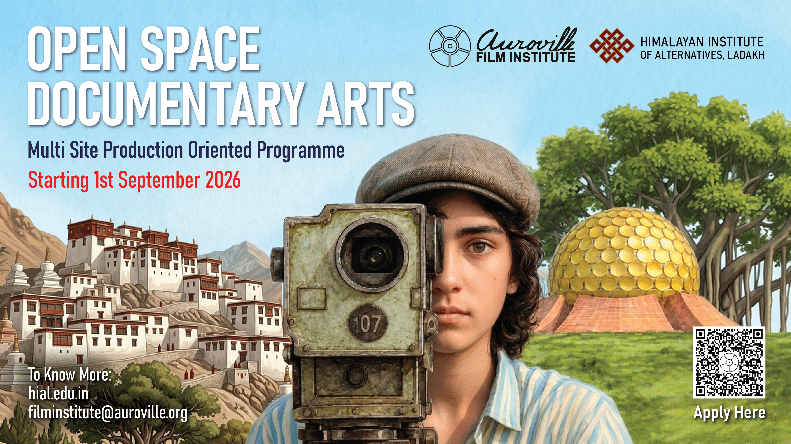

Overview
Open Space Documentary Arts (OSDA) is a one-year, production-oriented diploma programme offered collaboratively by the Auroville Film Institute (AVFI) and the Himalayan Institute of Alternatives, Ladakh (HIAL). Structured across Ladakh, Auroville and a self-directed field location, the programme combines documentary cinema, contemporary media arts and experiential learning through the framework of Self–Surrounding–Story (3S).
Moving from environmental immersion in Ladakh to self-inquiry in Auroville, participants engage with ecology, community, memory, embodiment and contemporary documentary practices. Through field-based learning, creative experimentation and mentored production, they develop both technical competencies and critical perspectives. The programme culminates in independent documentary and media arts projects, fostering practitioners who are artistically adventurous, ethically grounded and deeply attentive to the relationships between people, place, culture and the living world.
Starting 1st September 2026. Last Date of Application: 15 July 2026
Programme Structure
- Module-1: In Ladakh For 08 weeks: From 1 Sept to 31 Oct 2026;
- Module-2: In Auroville For 12 weeks: From 1 Dec 2026 to 28 Feb 2027;
- Module-3: Site of Choice For 10 weeks: From 1 Mar to 15 May 2027;
- Module-4: Production Consolidation For 06 weeks: From 15 May to 30 June 2027.
The OSDA Programme will primarily unfold over two sites: Auroville and Ladakh; the Programme will be carried over 4 Modules - as follows :
Module 1: Ladakh — Environmental Immersion | Surrounding → Story
Module 2: Auroville — Self as Site | Self → Story
Module 3: Site of Choice — Self-Directed Productions | Self → Surrounding → Story
Module 4: Auroville — Consolidation & Professional Orientation
Key Features
- From Ladakh to Auroville
- Documentary and Media Arts
- Learning by Doing
- Ecological Immersion
- Embodied Inquiry
- Interdisciplinary Mentorship
- Independent Project Pathways
- Expanded Documentary Forms
- Creative Research Methods
- Community and Collective Learning
- Experiential Pedagogy
- Archives, Memory and Place
- Portfolio Development
Programme Fees
- Indian Students: ₹2,00,000/-
- International Students: €5000/-
*Please refer to this PDF to see the list of countries eligible for subsidised international fee
*Accommodation charges extra: ~₹8000/€200 per month(to be paid on monthly basis - when accommodation is availed)
Equipment Requirements
- Camera
- Tripod
- Sound Recording Device
- Editing Laptop
*No specific recommendations for camera models. The editing machine should be capable enough to process footage shot from one's own camera.
Selection Process
-
Step 1: Applications will be shortlisted on the basis of 2 main factors:
(i) Up to 250 words statement of Purpose / motivation to join the programme.
(ii) General Orientation -not necessarily related to filmmaking; but reflecting specific interests.
- Step 2: Online interaction with shortlisted applicants
Final Selected Applicants will be guided to the HIAL portal to confirm registration of the admission. - Minimum age: 18+ years (No upper age limit)
Key People

Sonam Wangchuk
Engineer, Innovator and Education Reformist
Founding Director, Himalayan Institute of Alternatives, Ladakh
Consultant, OSDA Programme

Gitanjali J Angmo
Social Entrepreneur and Educationist
Founder & CEO, Himalayan Institute of Alternatives, Ladakh
Consultant, OSDA Programme

Richa Hushing
Documentary Filmmaker and Editor
Founding Director & Chief Executive, Auroville Film Institute
Curriculum Designer & Programme Director, OSDA Programme

Rrivu Laha
Documentary Filmmaker and Cinematographer
Founding Director & Chief Creative, Auroville Film Institute
Co-Director & Mentor, OSDA Programme
Faculty Constellation
- Dr. Soudhamini; Deepti Gupta; Stanzin Dorjai Gya; Alok Arora & Rukshana Tabbasum; Anuja Ghosalkar; Ishita Shah; Murli Krishna;
- In Ladakh - Rev. Elijah Spalbar Gergan; Padma Shri Morup Namgyal; Tswang Namgyal; Prof. Tashi Dawa; Viraf Mehta and others.
- In Auroville - Town Development Council, Forest and Farm communities, and the Residents' Assembly of Auroville will participate through lectures, dialogues and field-based learning engagements.
Additional Field Experts
Contact Information
AVFI: info@aurovillefilminstitute.com
Richa: +91 9969879319
Tiyasha: +91 9767475001
HIAL: study@hail.edu.in
Dechen: +91 7051992140